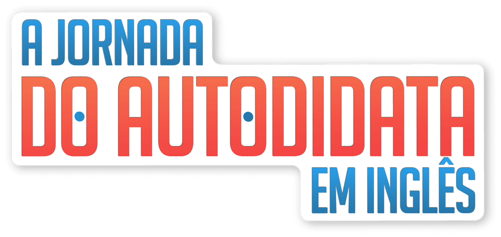

Realize seu sonho de falar inglês com segurança e naturalidade.
Com o“Inglês 80/20”você aprende o inglês da vida real e fica fluente em poucos meses, mesmo que tenha pouco tempo pra estudar.
E aí, bora?Junte-se a nós nessa jornada rumo a fluência.